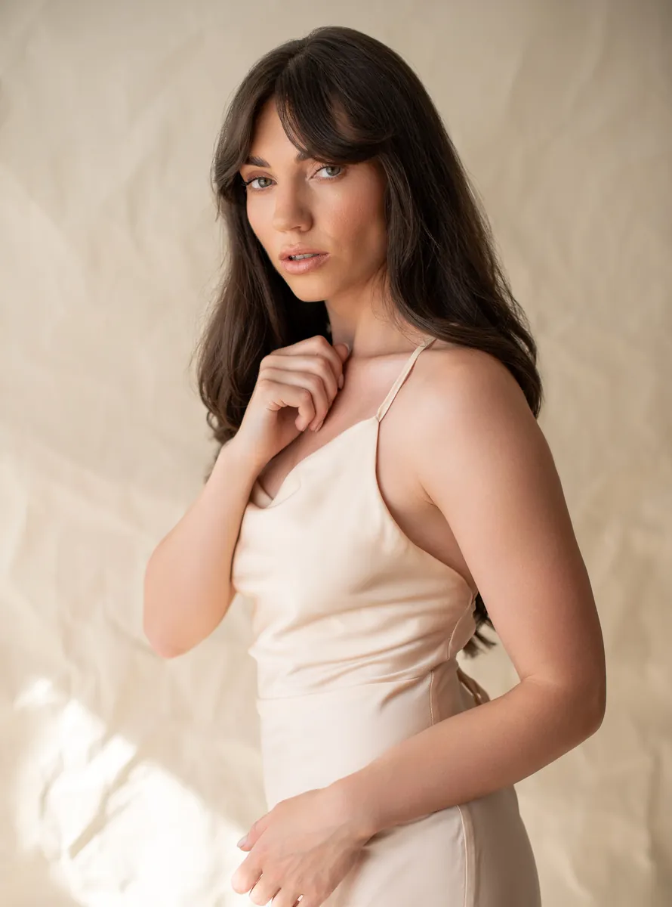
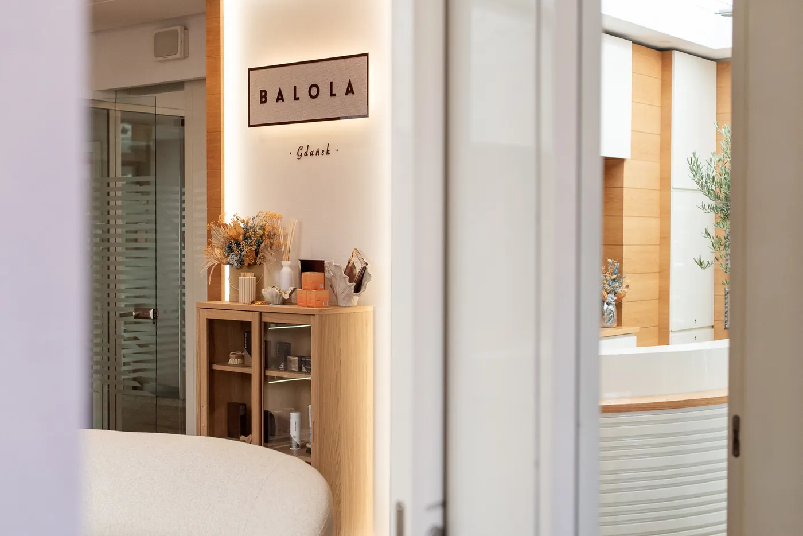
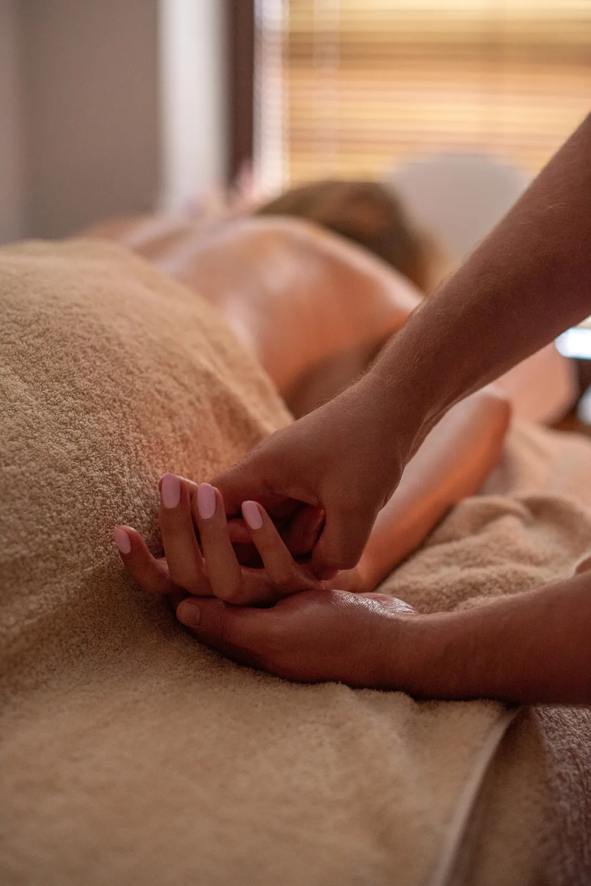
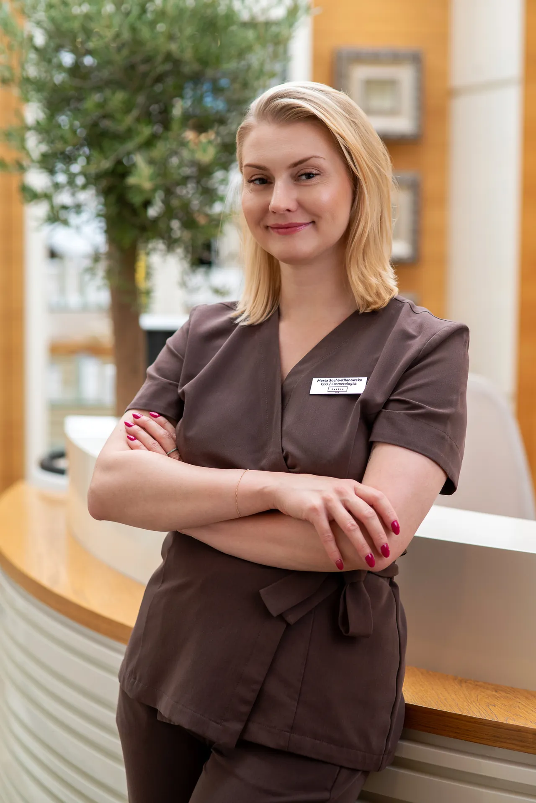
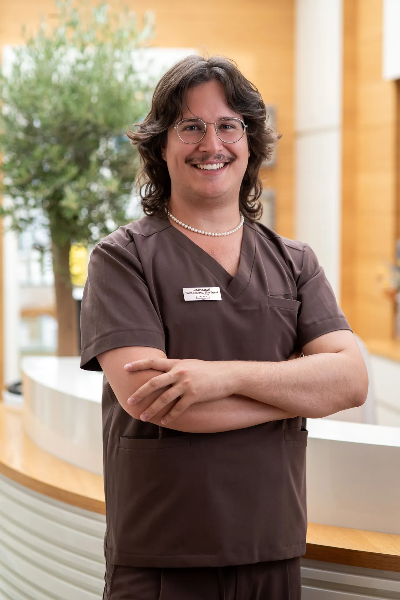

About us
Balola means 12 years of experience that began in Sopot. Gdańsk is the next chapter of that story, with its own character, treatments and a view of the Motława.

From Sopot to Gdańsk
Balola was founded in Sopot, on Kościuszki Street, for active, demanding and informed women - women who expect real results and want their time at the salon to feel good.
After 12 years we are opening the next chapter in Hotel Gdańsk Boutique. The same care for results, plus more room for rest, rituals and recovery - on the fifth floor, overlooking the Motława.


Longevity at Balola, simply put
Modern skincare, recovery and well-being in the spirit of contemporary longevity. That is how we describe our approach: mindful self-care, recovery, well-being and a better quality of life for longer.
What does longevity mean?
Literally, a long life. In skincare it means looking after your skin and body so that they look and feel good not only today, but in the years ahead.
What does it look like in practice?
We combine relaxation, manual therapies and modern technologies. Instead of a one-off effect we offer a well-thought-out plan: treatments matched to your skin’s needs, recovery and home care, so that the results last longer.
Is it for me if longevity is new to me?
Yes. Start with a free 30-minute consultation. Tell us what you need and we will suggest where to begin.
And the longevity add-ons in the price list?
Complement your face or body treatment with longevity add-ons chosen for your needs. It is extra time for recovery, calm and even deeper relaxation. You can also choose a 30-minute longevity session on its own.
Our specialists
Balola is run by Marta Socha-Kilanowska together with her husband, Jakub Kilanowski. In Gdańsk, a team of cosmetologists and massage therapists combines high-tech device treatments with manual therapies, including massage and reflexology, and spa rituals in the spirit of longevity.
Every visit starts with a conversation. We match the treatment to what your skin needs and how you want to feel afterwards, and then suggest how to make the results last at home.

Meet us

Marta Socha-Kilanowska
Owner of Balola and cosmetologist
I have been working in cosmetology for more than eighteen years, and with Balola since the very beginning. Over that time I have gained experience in the treatment room and developed my own vision of a place where effective skincare goes hand in hand with rest and a good experience of the whole visit.
Read moreShow less
What matters most to me is understanding the needs of the skin and planning the next steps. I like to know what we are doing, why we choose a given method and how it fits into a longer course of treatment. I am interested in modern technologies, recovery and the longevity approach. As we develop our offer, I look for solutions that combine these areas in a meaningful way.
As the owner, I look after the direction Balola is taking, the choice of treatments and our standards of work. Yet contact with clients still gives me enormous satisfaction - seeing the changes in their skin and the relationships built over the years.
I also have a weakness for details, which you can see in the Balola interiors. Privately, I am mum to Kazik, and I like to spend my free time on dried flower arrangements and decorations. I enjoy choosing materials, combining colours and giving a space its own character.

Jakub Kilanowski
Massage therapist and co-owner of the spa
Before I joined Balola, my working life was spent at sea for many years. Working as a seaman taught me independence, responsibility and composure. Today I draw on that experience as a massage therapist and co-owner of Balola SPA in Gdańsk.
Read moreShow less
In bodywork I value doing something tangible - being able to help muscles relax and to create the conditions for someone to rest. It is important to me to tailor the massage to the person, how they feel and what they expect. I like the moment when the everyday rush gives way and the body gradually unwinds.
As co-owner, I also take care of the day-to-day running of the spa and organisational matters. Together with Marta, we are creating a place where our different experiences and skills complement each other.
I like to spend my free time with my family. My passion is cooking for my loved ones - I enjoy both preparing meals and getting together around the table. I also relax on walks with my dog and during quiet moments at home.
Hania
Spa manager and reception host
At Balola I combine working at the reception in Sopot with my role as spa manager in Gdańsk, where I also support the reception team. My work covers day-to-day organisation, contact with guests and cooperation with the team. I like it when everything falls into place and good communication helps things run smoothly.
Read moreShow less
At the reception I value the variety of encounters and the chance to help - sometimes with choosing a date, at other times with answering questions before a first visit. In my managerial role, cooperation and finding practical solutions to everyday situations are what matter to me.
I study psychology because I am fascinated by human emotions, motivations and behaviour. This curiosity about other people stays with me at work too and helps me better understand different perspectives.
Outside work I am interested in fashion, which gives me room for creativity and self-expression. I love cats, like to surround myself with plants and often return to the Harry Potter books. These are my ways to rest and switch off from everyday duties.
Martyna
Massage therapist and reflexologist
For several years I have been practising professional massage and reflexology. In my work I help the body relax, ease the tension you feel and find a moment of rest from the everyday rush. Foot reflexology has a special place for me - I value its calm rhythm and the chance to focus on how a person feels their own body.
Read moreShow less
During a treatment I combine knowledge with intuition and observation. I adapt the way I work to individual needs, because sometimes the body needs a firmer massage and at other times gentleness and calm. I regularly extend my skills to develop my craft and respond ever better to my clients’ needs.
I rest best close to nature. Walks and time outdoors help me clear my head and regain energy. I also like making things with my own hands - when inspiration strikes, I reach for a brush and paints or try my hand at working with clay. The creative process itself gives me a lot of joy.
Kasia
Cosmetologist
I hold a master’s degree in cosmetology and have been working in the beauty industry for ten years. I gained experience in cosmetology clinics, day spas and a body contouring studio. This allowed me to get to know different areas of care and develop a versatile approach to working with the face and body.
Read moreShow less
I especially enjoy treatments where I can combine the possibilities of modern technology with manual techniques. When choosing methods, I take into account the needs of the skin, the expectations and the daily habits of each person. I also feel close to the longevity philosophy, which encourages mindful, long-term self-care, recovery and well-being.
I bring a lot of warmth and positive energy to the treatment room. I enjoy contact with people and I want every appointment to be both a worthwhile treatment and a pleasant moment for yourself. My greatest satisfaction is seeing someone leave rested, happy and with a smile on their face.
Privately, I am a mum of two daughters. I love travelling - long journeys and small, spontaneous trips. I like spending time actively, discovering new places, and at home I enjoy baking sweet treats for my loved ones.

Hubert
Cosmetologist and reception host
I am a cosmetologist with a particular interest in working with problem skin. I focus on improving its condition and helping people build a mindful skincare routine. I believe good results require an individual approach, patience and consistency - both during visits and in everyday skincare.
Read moreShow less
It is important to me that the people I work with understand the solutions I suggest. I am happy to explain why we choose a particular treatment or product and what role it plays in the whole skincare plan. I like to accompany people through this process and watch the changes together.
You will also meet me at the Balola reception. It is the second part of my job, where I use my knowledge of our offer and help organise visits.
Outside the treatment room I volunteer to help seniors, and in my free time I look after my plant collection. These activities have taught me patience, regularity and noticing the needs of others. They also remind me that small gestures and consistent care matter.
Katarzyna
Cosmetologist
I do not just know what I apply to the skin - I also know the journey a cosmetic product takes before it reaches the treatment room or your home routine. I graduated in cosmetology from Collegium Medicum in Bydgoszcz and hold a master’s degree in the pharmaceutical and cosmetic industry from the Medical University of Gdańsk.
Read moreShow less
I gained experience both in the treatment room and in a research and development laboratory, creating cosmetic formulas from scratch. I know the process from the idea, through formulation and testing, to quality and safety requirements. Thanks to this, I look at skincare through the lens of a product’s composition, its purpose and the real needs of the skin.
In the treatment room I combine scientific training with practice and manual techniques. I value what technology can do, but touch and direct contact with another person are just as important to me. It is this combination that best reflects my approach to cosmetology.
Outside work I like discovering new flavours, experimenting in the kitchen and celebrating everyday moments. Motherhood reminds me how precious patience, mindfulness and small moments just for yourself are.
Karolina
Massage therapist
I was interested in massage long before it became my profession. I started with classic and relaxation massage courses, which made me want to keep learning. I then completed the two-year massage technician programme at the Pomeranian Medical Post-Secondary School in Gdańsk.
Read moreShow less
Classic and relaxation massage are closest to my heart. In classic massage I focus on working with tense muscles and improving the body’s comfort. In relaxation massage I enjoy the calm pace and flowing movements that help you slow down and rest. I adjust the pressure and the way I work to the needs and preferences of the person receiving the treatment.
I am an empathetic and calm person. Calm is close to me both at work and outside it - I feel at home in a rhythm that lets me focus on one person and the massage I am giving.
Privately, I value the comfort of home. I like reading books, going for walks and listening to rock from the 70s and 80s. I love animals - my sixteen-year-old dog Sonia and my mice are an important part of my everyday life.
Guest reviews
Ratings checked on 9 Nov 2026. Booksy reviews are quoted verbatim in Polish.
„Jestem bardzo zadowolona z wizyty! Zabieg przebiegł świetnie, atmosfera była bardzo miła i komfortowa. Konsultacja była szczegółowa, wszystko zostało wyjaśnione. Widać pełen profesjonalizm i troskę o klienta. Na pewno wrócę ponownie! Podziękowanie dla Pani Katarzyny Kreńskiej”
„Zabieg bardzo relaksujący i odżywczy. Pan Hubert dokładnie omawiał każdy etap zabiegu, dzięki czemu czułam się zaopiekowana i w pełni komfortowo. Profesjonalne podejście, miła atmosfera i chwila prawdziwego relaksu. Zdecydowanie polecam!”
„Świetnie wykonany zabieg, Pani Katarzyna sprawiła, że atmosfera podczas zabiegu była przyjemna i czułem się zaopiekowany choć trochę mnie stresował zabieg laserowy. Polecam serdecznie”
„Bardzo przyjemny masaż, piękne glow na twarzy, super atmosfera, profesjonalnie i przytulnie. Polecam serdecznie”
„Laminacja + masaż głowy ekstra!!! Polecam wszystkim”